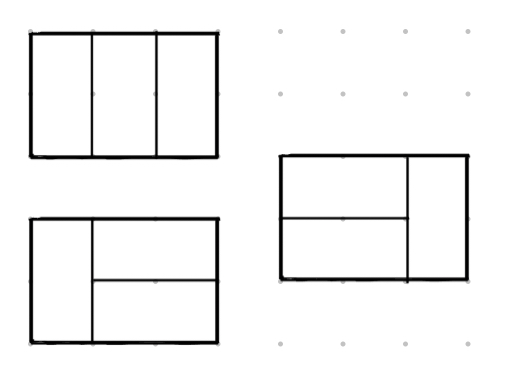
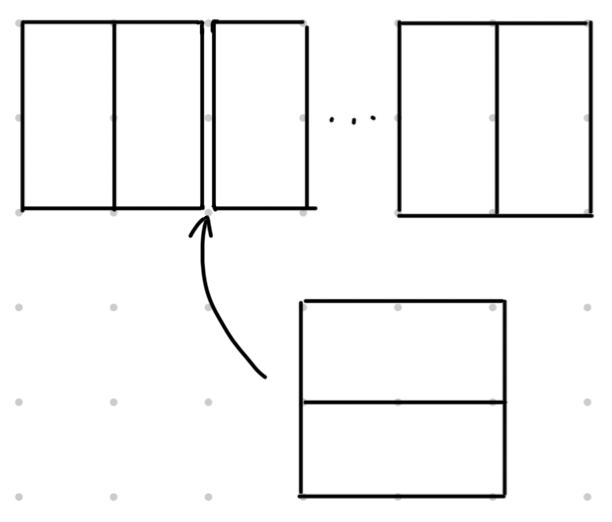
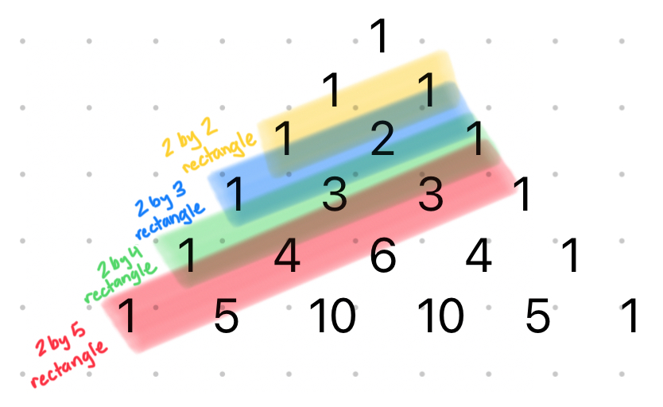

Say you have a $2$ inch wide rectangle of a given length, and a bunch of $1$ by $2$ inch dominos. How many different ways can you cover the rectangle with dominos?
We can start by looking at a specific case - say, a $2$ by $3$ rectangle. Clearly, we can cover the rectangle with $3$ dominos placed vertically. However, we can also place the dominos horizontally. In this case, we can make the first $2$ dominos horizontal, and the last one vertical, or the first one vertical, and the last $2$ horizontal.

Notice that to get the arrangements of dominos where some are horizontal, we can pick a pair of consecutive vertical dominos from the all-vertical arrangement and “flip” them to make them horizontal. This should apply to any generic $2$ by $n$ rectangle - we can cover it entirely with vertical dominos, and then flip different consecutive pairs of dominos to get new arrangements.
Now we have a different problem - how many ways are there to pick consecutive pairs of dominos (the ones we could “flip”)? We can count this by finding the number of ways to select one pair of dominos, and adding the number of ways to select two pairs, and so on until we’ve found the number of ways to select all possible pairs of dominos (there should be only 1 way).
We can use binomial coefficients to count the ways to select pairs of consecutive dominos. To count the number of ways to select one pair of consecutive dominos, we just have to assume that we already have a pair of horizontal dominos, and we’re “placing” them among a bunch of vertical dominos. We’re counting the two horizontal dominos as one large domino, because we know that they’re going to be next to each other.

So now we have $n-1$ groups, where one of them is the group of $2$ horizontal dominos. We can now say that
$$\dbinom{n-1}{1}$$
is the number of ways we can arrange them - we’re selecting which one of the $n-1$ groups is going to be the group of $2$ horizontal dominos.
Similarly, we can also count the number of ways to select $2$ pairs of consecutive dominos. We’re assuming now that we already have $2$ pairs of horizontal dominos, and treating them like $2$ large dominos. Now we have $n-2$ groups, and can say that there are
$$\dbinom{n-2}{2}$$
ways to arrange them - we’re selecting $2$ of the $n-2$ groups to be the $2$ pairs of $2$ horizontal dominos.
We can continue doing this for any rectangle of length $n$, and find that the number of arrangements of dominos is:
$$1 + \dbinom{n-1}{1} + \dbinom{n-2}{2} + \dbinom{n-3}{3} + ...$$
It’s worth noting that for an even value of $n$, the series ends in $1$ - all of the dominos can be horizontal. However, for an odd value of $n$, the sequence ends in $\lceil \frac{n}{2} \rceil$ - there’s one “leftover” vertical domino that can be placed anywhere among the horizontal pairs.
Some other interesting things to notice are that the series can be represented by the diagonals on Pascal’s triangle:

Also, if we calculate the number of arrangements for $n=1$, $n=2$, $n=3$, and so on, we get the following:
$$1, 2, 3, 5, 8, 13, 21, 34, 55, ...$$
These are the Fibonacci numbers.... what?
Well, each Fibonacci number is generated by adding the previous two numbers in the sequence. This actually applies to our domino-arranging problem. We can have different arrangements of dominos on a rectangle of length $n-2$, and then add an extra $2$ horizontal dominos on the end of each one to make rectangles of length $n$. We can also have different arrangements of dominos on a rectangle of length $n-1$, and add an extra vertical domino on the end to make rectangles of length $n$. Adding these two sets together (arrangements ending in horizontal dominos or a vertical domino) gives all the arrangements of dominos on a rectangle of length $n$.
So, we can actually find the number of ways to arrange dominos on a rectangle of length $n$ by finding the $(n+1)$st Fibonacci number.